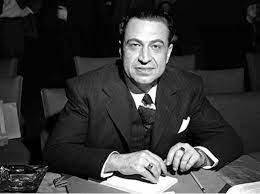

"No sabes durar. Tu esencia
como el agua pasa.
Como el agua el alma del cielo que miras
es, sólo, tu alma".
JAIME TORRES BODET; Biombo, 1925.
JAIME TORRES BODET
Introducción
Nació en Ciudad de México en 1902 y murió en la misma ciudad en 1974. Escribió bajo los seudónimos de Celuloide,, Sube y Baja y Marcial Rojas. Fue un escritor, ensayista, poeta, académico y funcionario mexicano perteneciente al grupo de Loe Contemporáneos. Fue director general de la Unesco de 1948 a 1952, reconocido por su trabajo de alfabetización y por haber implementado una política de relaciones exteriores a inicios de la Guerra Fría. Asimismo, dentro de la política mexicana, se desempeñó como secretario de Educación Pública en dos ocasiones y de secretario de Relaciones Exteriores. Tras dieciséis años de lucha contra el cáncer, se suicidó en 1974.
Poemas
SOLEDAD
Si das un paso más te quedas sola...
En el umbral de un tiempo
que no es el tuyo aún y no es ya el mío.
Sobre el primer peldaño
de una escalera rápida que nadie
podrá jamás decir si baja o sube.
En el principio de una primavera
que, para tu patético hemisferio,
nunca resultará
sino el reverso casto de un otoño...
Porque la frágil hora
en que tu pie se apoya es un espejo,
si das un paso más te quedas sola.
Jaime Torres Bodet; "Cripta", 1937.